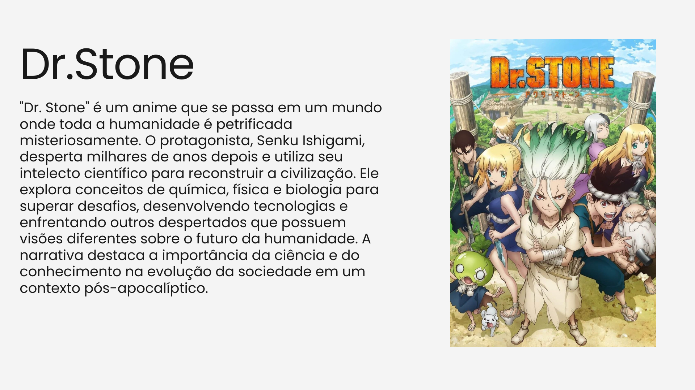
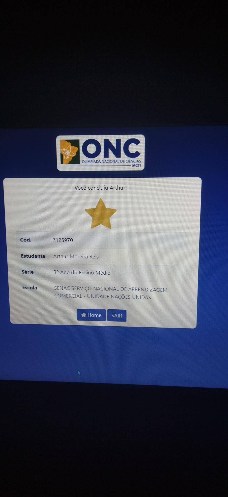

Ciências da Natureza

Esse de longe foi o trabalho de CN mais legal de fazer, foi sobre um anime muito bom chamado DR.Stone e tivemos que relaciona-lo com física, química e biologia. Fizemos em grupo, a apresentação foi otima e o resultado final do trabalho foi muito bom.

Nesse trabalho fizemos a prova da ONC e eu escolhi esse trabalho pois atraves dele me classifiquei para a 2° fase da ONC e após finalizar a 2°fase recebi um certificado do Senac como forma de agradecimento por representa-los

Nesse trabalho tive que ir atras de liquens no campus do Senac, eles se localizam nas arvores e procura-los foi bem legal. A atividade foi bem leve, divertida pois foi fora da sala.